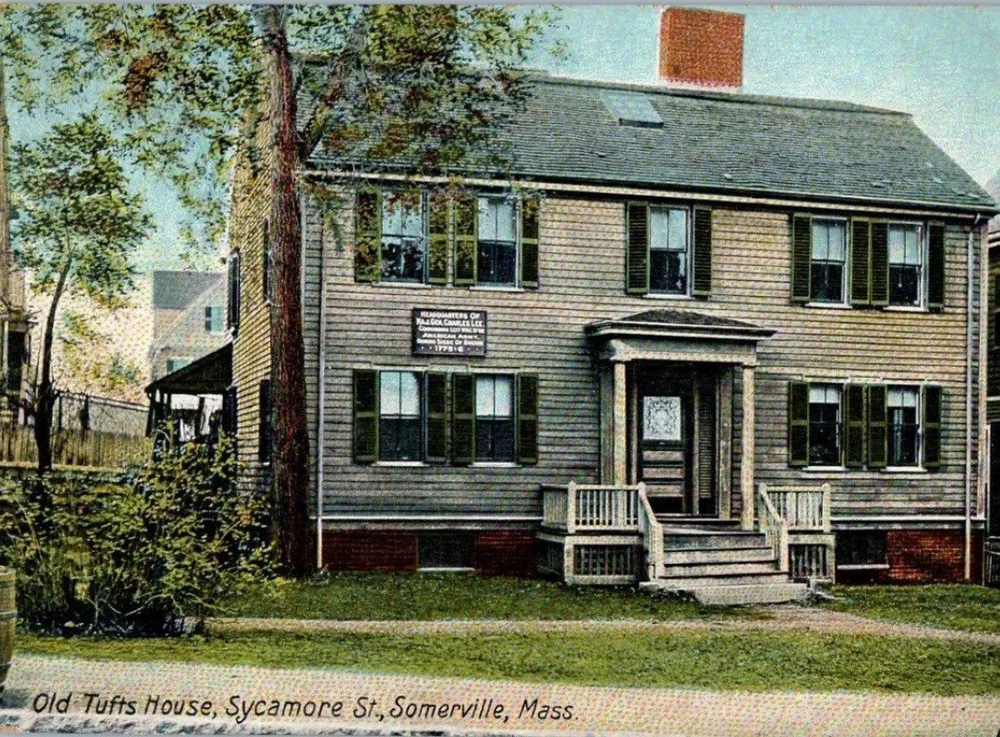

Biography
Oliver Tufts was born in Charlestown, in the part that became Somerville, on October 20, 1801. He was the youngest of the twelve children of John Tufts (1754–1839) and Elizabeth (Perry) Tufts. He was born on the family farm on what is now Sycamore Street, lived there all his life, and died there of paralysis on May 18, 1883 (Tufts Kinsmen, Vol. I, p. 238, no. 130-12).
and Elizabeth (Perry) Tufts. He was born on the family farm on what is now Sycamore Street, lived there all his life, and died there of paralysis on May 18, 1883 (Tufts Kinsmen, Vol. I, p. 238, no. 130-12).
He was a farmer and a large landowner. When Somerville was set off from Charlestown in 1842, he became the new town’s first assessor. He also served as an overseer of the poor for a number of years and was one of the founders of the Unitarian church on Highland Avenue (Tufts Kinsmen, Vol. I, p. 238). Edward C. Booth wrote that Oliver farmed the old place until his death in 1883 (Edward C. Booth, “The Tufts Family in Somerville,” Historic Leaves (Somerville Historical Society), vol. 1 (1902–03), pp. 23–24. Text (Perseus)).
The House on Sycamore Street

The house had been General Charles Lee’s headquarters during the siege of Boston, 1775–76. Peter Tufts of Winter Hill set his son John up on this farm during the Revolution, and it passed from John to Oliver (Edward C. Booth, “The Tufts Family in Somerville,” Historic Leaves (Somerville Historical Society), vol. 1 (1902–03), p. 23. Text (Perseus)). It stands today at 78 Sycamore Street, moved a short distance from its first site; see Places: Homesteads.
set his son John up on this farm during the Revolution, and it passed from John to Oliver (Edward C. Booth, “The Tufts Family in Somerville,” Historic Leaves (Somerville Historical Society), vol. 1 (1902–03), p. 23. Text (Perseus)). It stands today at 78 Sycamore Street, moved a short distance from its first site; see Places: Homesteads.
An unofficial history of the house, compiled by a resident from the files of the Somerville Historical Society, says it was built between 1714 and 1719 by a Mr. Mattison (or Watson), whose family owned the land until 1778. It says the house first stood on a knoll at what is now the corner of Sycamore and Pembroke Streets, and that Sycamore Street began as its private drive (Rich Sanford, “The Oliver Tufts House: An Unofficial History” (2005, archived copy)).
Oliver’s only child, Annie Louise Tufts, was born in the house on October 31, 1839. She married Dr. William Kelley Fletcher in 1874 and died in Somerville on October 7, 1917, leaving no children (Tufts Kinsmen, Vol. II, p. 158, no. 302-1).
A Family Story of April 19, 1775
Oliver was the source of one of the best-known stories about his parents. In 1864 Samuel Abbot Smith, speaking at West Cambridge (now Arlington), told how John Tufts met Elizabeth Perry on the day of Lexington and Concord, and named “Oliver Tufts” in a footnote as his authority:
“John Tufts had come up from his home in Somerville to take his part in the events of the day. He chanced to meet a young woman, Elizabeth Perry by name, wandering in the fields in a state of great anxiety and fear. The young man, though he had never seen her before, gallantly offered his protection, which she thankfully accepted; and, as for the result, it need only be said that her name afterwards became Elizabeth Tufts.”
Samuel Abbot Smith, West Cambridge on the Nineteenth of April, 1775: An Address Delivered in Behalf of the Ladies’ Soldiers’ Aid Society (Boston, 1864), pp. 50–51. Internet Archive; the footnote on p. 51 reads “Oliver Tufts.”
The same story, told later by Ellen Chase, is on his father’s profile .
.
Service Record
Town: Charlestown, later Somerville (Sycamore Street), Mass. · Dates: 20 October 1801 – 18 May 1883
Born after the Revolution; no military service is recorded for him.
Family Connection
Father: John Tufts (1754–1839) . Mother: Elizabeth (Perry) Tufts (1759–1844). He was the twelfth child; his brothers and sisters included Asa Tufts (1799–1836), cordwainer, whose widow he married (Tufts Kinsmen, Vol. I, p. 238). Child: Annie Louise (1839–1917), wife of Dr. William Kelley Fletcher (Tufts Kinsmen, Vol. II, p. 158).
. Mother: Elizabeth (Perry) Tufts (1759–1844). He was the twelfth child; his brothers and sisters included Asa Tufts (1799–1836), cordwainer, whose widow he married (Tufts Kinsmen, Vol. I, p. 238). Child: Annie Louise (1839–1917), wife of Dr. William Kelley Fletcher (Tufts Kinsmen, Vol. II, p. 158).
Relatives with profiles on this site: father John Tufts (1754–1839) ; grandfather Peter Tufts of Winter Hill
; grandfather Peter Tufts of Winter Hill ; grandmother Anne Adams Tufts
; grandmother Anne Adams Tufts .
.
Spouse(s)
- Dorothy (Danforth) Tufts (b. July 28, 1797, at Lynn; d. February 7, 1875, at Somerville), daughter of Joshua and Lydia (Sweetser) Danforth and widow of his brother Asa Tufts; married November 21, 1838, at Cambridge, by the Rev. James D. Green (Tufts Kinsmen, Vol. I, p. 238).
Authoritative IDs / Index Numbers
| Source | ID / status |
|---|---|
| Perseus person index (auth=) | Note: Pending further work. |
| Find a Grave memorial | Note: Pending further work. |
| Brooks, History of Medford (1855) register no. | Note: Pending further work. |
| Mass. Soldiers and Sailors | Not yet checked for this page |
| DAR ancestor no. | Note: Pending further work. |
| FamilySearch ID | Note: Pending further work. |
| Geni profile | Note: Pending further work. |
| WikiTree ID | Note: Pending further work. |
| Town / vital records | Medford VRs not yet checked by volume and page |
Only IDs confirmed against dates and family are given as matches. “Not yet checked” means the source has not been searched; “Checked, not found” means it was searched without a match.
⚑ Unverified
The house’s building date (1714–1719) and its builder come from an unofficial modern history, not from a deed or other record. Visits by Washington to the house are mentioned in the family record as tradition, not documented here. The postcard’s publisher and date are not shown on the card. Note: Pending further work.
Links and Resources
Every source, record, map, survey, marker and artifact tied to this person, gathered in one place. Page numbers are given where a book is cited.
Maps, Surveys and Artifacts
- — Old Tufts House, Sycamore Street, Somerville. Early twentieth-century colored postcard: “Old Tufts House, Sycamore St., Somerville, Mass.” The tablet beside the upper window marks the house as the hea

Markers, Plaques and Places
- Places: Homesteads — …(Edward C. Booth, “The Tufts Family in Somerville,” Historic Leaves (Somerville Historical Society), vol. 1 (1902–03), p. 23. Text (Perseus)). It stands today at 78 Sycamore Street, moved a short distance from its first site
Digitized Books and Journals
- …Vol. I, p. 238). Edward C. Booth wrote that Oliver farmed the old place until his death in 1883 (Edward C. Booth, “The Tufts Family in Somerville,” Historic Leaves (Somerville Historical Society), vol. 1 (1902–03), pp. 23–24. · Text (Perseus)
- Rich Sanford, “The Oliver Tufts House: An Unofficial History” (2005, archived copy) — …1719 by a Mr. Mattison (or Watson), whose family owned the land until 1778. It says the house first stood on a knoll at what is now the corner of Sycamore and Pembroke Streets, and that Sycamore Street began as its private drive
- Samuel Abbot Smith, West Cambridge on the Nineteenth of April, 1775: An Address Delivered in Behalf of the Ladies’ Soldiers’ Aid Society (Boston, 1864), pp. 50–51. · Internet Archive